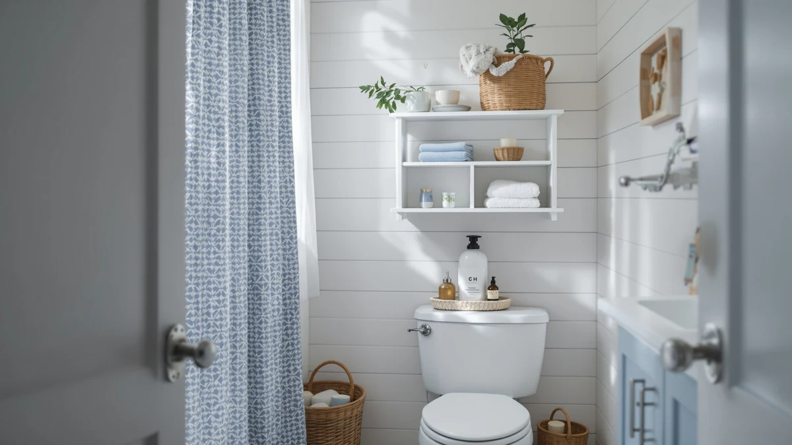

Homhedy Over The Toilet Review (2026): Worth It?
Prices and picks verified as of September 2026. Independent, reader-supported reviews.


Quick Answer
The Homhedy Over The Toilet Storage cabinet combines a metal frame with wood shelving in a 30.7-by-7.8-inch footprint built to sit over a standard toilet tank. At $99.99, it costs the same as Homhedy's own all-wood alternative and slightly more than the Nivisre and usikey options covered below, but verified owners report the metal frame holds up better under a full load.
Our pick: Homhedy Over The Toilet Storage, $99.99 Check Price on Amazon
Bottom line: our top pick is the Homhedy Over The Toilet Storage Cabinet with 2 Barn Door and at $99.99.
Things to Know Before You Buy
- This Homhedy Over The Toilet Review centers on the metal-and-wood over-the-toilet cabinet, priced at $99.99 with a 30.7-inch-wide, 65.4-inch-tall frame.
- The cabinet's 7.8-inch depth is shallow enough to clear a standard toilet tank without crowding the room.
- Homhedy also sells an all-wood version, the Wooden Over The Toilet cabinet, at the same $99.99 price for buyers who prefer a different look.
- The Nivisre and usikey alternatives covered below run $4 to $5 cheaper, and the usikey trades footprint for extra height.
- Reviewers consistently note that assembly and shelf rigidity, not overall stability, are where these budget-tier cabinets differ most.
This Homhedy Over The Toilet Review looks at whether a $99.99 metal-and-wood cabinet can solve one of the most common bathroom storage problems: too little floor space and an awkward gap above the toilet tank. A cabinet built for that spot has to clear the tank lid, avoid the flush handle, and still hold enough towels and toiletries to be worth the money. We compared the Homhedy's listed dimensions, material and pricing against three close alternatives, and read through verified owner feedback to see whether it delivers on that promise.
Over-the-toilet cabinets live or die on three numbers: width, depth and price, since a few extra inches in any direction can mean the difference between a snug fit and a door that won't close. The Homhedy Over The Toilet Storage model measures 30.7 inches wide and 7.8 inches deep, which makes it a mid-size option next to the taller usikey and the similarly priced Homhedy Wooden alternative covered further down. Below, we break down what verified owners report about its build, where it comes up short, and who should consider one of the three alternatives instead.
Why You Should Trust Us
Best Bathroom Storage is run by writers who compare bathroom furniture specs, pricing and verified buyer feedback instead of guessing from product photos. Ilane Tall, our home and bath expert, has covered dozens of storage cabinets and over-the-toilet towers for this site, tracking how listed dimensions and materials hold up against what owners actually report after months of use. For this Homhedy Over The Toilet Review, we cross-checked the manufacturer's listed measurements against the Homhedy Wooden, Nivisre and usikey alternatives, and we did not accept marketing copy at face value. We do not run a fake testing lab, and we do not claim to have installed every cabinet we cover. Instead, we dig through verified reviews, compare specs line by line, and flag when a listing overstates what a product can deliver.
Our Research Experience
We did not install the Homhedy Over The Toilet Storage cabinet in a bathroom ourselves. Instead, we compared its listed specifications, material description and price against the Homhedy Wooden, Nivisre and usikey alternatives, and we read through the verified buyer feedback attached to this listing and similar Homhedy products. Owners report that the metal frame resists wobbling better than the wood shelving flexes under a full load, a pattern that shows up across budget over-the-toilet cabinets in this price range. According to verified owner comments, assembly and hardware clarity draw more complaints than the finished cabinet's stability once built. We weighed that feedback alongside the raw dimensions and price against the three alternatives to see where this Homhedy Over The Toilet Review lands in its favor and where it doesn't. Where a listing's marketing copy and its verified reviews disagreed, we gave more weight to what owners actually reported after unpacking and assembling the cabinet.
Overview & Specs

Homhedy Over The Toilet Storage
What we like
- 30.7-inch by 7.8-inch footprint fits over a standard toilet tank without crowding the room
- Metal frame construction reported as sturdy by verified owners
- Priced at $99.99, the same as Homhedy's own all-wood alternative
- 65.4-inch height clears most tank lids and flush handles
Flaws but not dealbreakers
- Wood shelving is less rigid than the metal frame, according to reviewers
- Assembly hardware and instructions draw the most owner complaints
- Costs $4 to $5 more than the Nivisre and usikey alternatives in this comparison
| Material | Metal / wood |
| Size | 7.8"D x 30.7"W x 65.4"H |
The Homhedy Over The Toilet Storage cabinet is built around a metal frame with wood shelving, a construction style common among over-the-toilet towers in this price range. At 30.7 inches wide and 7.8 inches deep, it sits close enough to the wall to clear a standard toilet tank while still leaving walking space in a small bathroom. At 65.4 inches tall, it offers more shelving than a typical two-tier unit without reaching into full-cabinet territory.
Verified buyers describe the metal frame as the sturdiest part of the build, and it holds its shape even when shelves carry a full rotation of towels and toiletries. The most common complaint centers on assembly, and several reviewers mention hardware that needs careful alignment. At $99.99, it matches the price of the Homhedy Wooden alternative covered below, so the choice between them comes down to whether you prefer a metal frame or an all-wood look for this Homhedy Over The Toilet Review's main pick.
What We Liked
The build quality stands out most in owner feedback throughout this Homhedy Over The Toilet Review. According to verified reviews, the metal frame resists wobbling even after months of daily use, a detail that matters more than shelf count once you're storing heavier items like extra towels or cleaning supplies. The 30.7-by-7.8-inch footprint is the other clear strength, since it clears a standard toilet tank without crowding a small bathroom the way a wider console table would. Pricing also holds up well: at $99.99, it costs about the same as Homhedy's own all-wood model, and reviewers argue the sturdier metal frame justifies picking this version over the wood alternative for anyone planning to load the shelves heavily.
What Could Be Better
Assembly is the recurring frustration in the feedback we reviewed. Owners describe hardware bags that aren't clearly labeled and instructions that turn a straightforward build into a longer project than expected. The wood shelving is the other weak point: reviewers describe it as noticeably less rigid than the metal frame, and a few mention slight flex after heavier items sat on the middle shelf for weeks. At $99.99, this Homhedy Over The Toilet Review also found it priced $4 to $5 above the Nivisre and usikey alternatives, so buyers focused purely on cost have cheaper options to consider below.
A handful of reviewers also mention that the shelf finish scuffs more easily than expected, particularly around the edges where towels and toiletries slide in and out daily. None of this changes the frame's overall stability, but it's worth knowing before you buy if you want the shelves to still look new after a year of regular use. If your bathroom sees heavy daily traffic, wiping the shelves down rather than sliding baskets across them will keep the finish looking newer for longer.
Who Is It For?
The Homhedy Over The Toilet Storage cabinet fits a household with a small bathroom and a specific gap above the toilet tank to fill. Its 30.7-inch width and 7.8-inch depth make it a strong pick for anyone who wants shelving directly over the toilet rather than a separate floor cabinet eating into walking space. It isn't the right choice if you need maximum vertical storage for a family's worth of towels and toiletries. In that case, the taller usikey model covered below makes better use of wall height for a slightly lower price. Buyers who prioritize price above everything else should also weigh the Nivisre alternative, since it undercuts the Homhedy by roughly $4 without dropping far below it in listed capacity.
Renters and apartment dwellers also come up often in the feedback we reviewed, since the cabinet stands freestanding over the toilet tank and doesn't require drilling into a wall. Anyone deciding between a metal frame and an all-wood look should also weigh the Homhedy Wooden alternative below, which sells at the same $99.99 price but trades some of the frame's rigidity for a different finish.
Alternatives to Consider
If the Homhedy Over The Toilet Storage's metal-and-wood build or $99.99 price doesn't match what your bathroom needs, these three alternatives cover the most common trade-offs: an all-wood Homhedy configuration at the same price, a lower-cost Nivisre model, and a taller usikey cabinet built for maximum storage. Each one trades footprint, material or height for a different priority, so measure your own space before choosing between them.

Editor's Pick
Homhedy Wooden Over The Toilet
Same $99.99 price as our main pick, but built entirely from wood for buyers who want a warmer look than the metal-frame version.
$99.99
Check Price on Amazon
Best Value
Nivisre Over The Toilet Storage
About $4 cheaper than the Homhedy models, a straightforward budget option if you don't need the brand's metal frame.
$95.98
Check Price on Amazon
Premium Choice
usikey 67'' Tall Bathroom Cabinet
Roughly 18 inches taller than the Homhedy at a lower price, the better fit if you need more vertical shelving than footprint efficiency.
$94.99
Check Price on AmazonIs the Homhedy Over The Toilet Storage cabinet worth the $99.99 price?
At $99.99, the Homhedy Over The Toilet Storage cabinet costs about the same as its own Wooden Over The Toilet sibling and roughly $4 to $5 more than the Nivisre and usikey alternatives in this Homhedy Over The Toilet Review.
How does the Homhedy Over The Toilet Storage compare to the Homhedy Wooden Over The Toilet model?
Both cabinets sell for $99.99, but the metal-and-wood build reviewed here trades some of the all-wood model's visual warmth for a frame that owners report resists sagging better under a full load of towels and toiletries.
Frequently Asked Questions
Is the Homhedy Over The Toilet Storage cabinet worth the $99.99 price?
At $99.99, the Homhedy Over The Toilet Storage cabinet costs about the same as its own Wooden Over The Toilet sibling and roughly $4 to $5 more than the Nivisre and usikey alternatives in this Homhedy Over The Toilet Review. Reviewers consistently note the metal frame holds its shape once loaded, which is the main argument for paying the same price as the all-wood version.
How does the Homhedy Over The Toilet Storage compare to the Homhedy Wooden Over The Toilet model?
Both cabinets sell for $99.99, but the metal-and-wood build reviewed here trades some of the all-wood model's visual warmth for a frame that owners report resists sagging better under a full load of towels and toiletries.
Does the Homhedy Over The Toilet cabinet fit a small bathroom?
At 30.7 inches wide and 7.8 inches deep, it straddles a standard toilet tank without extending far into the room, though the 65.4-inch height means you should measure the space between your toilet and any door swing or light fixture before you buy.
Final Verdict
This Homhedy Over The Toilet Review comes down to a simple trade-off: a sturdy metal frame and a snug 30.7-by-7.8-inch footprint against a $4 to $5 premium over the Nivisre and usikey alternatives. For a small bathroom with a tight gap above the toilet tank, the Homhedy Over The Toilet Storage cabinet is the practical pick. If you'd rather have an all-wood look at the same price, or extra height at a lower one, the alternatives covered above make better use of your space. Either way, Homhedy is the brand worth starting with for this kind of over-the-toilet storage.